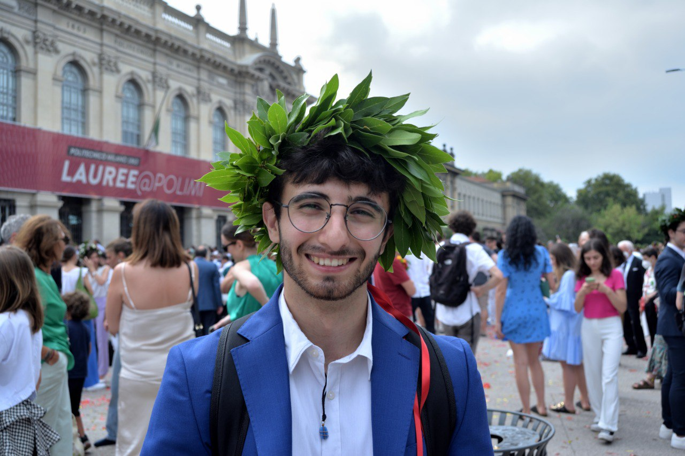
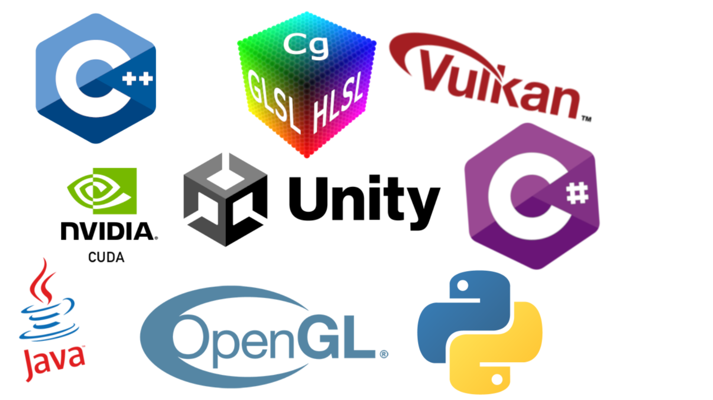
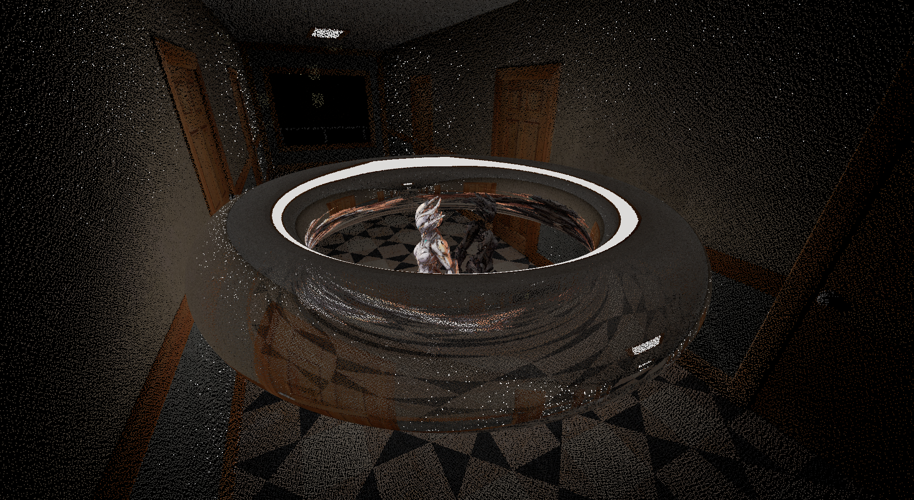
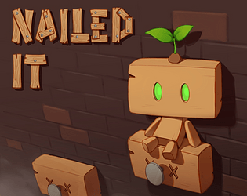
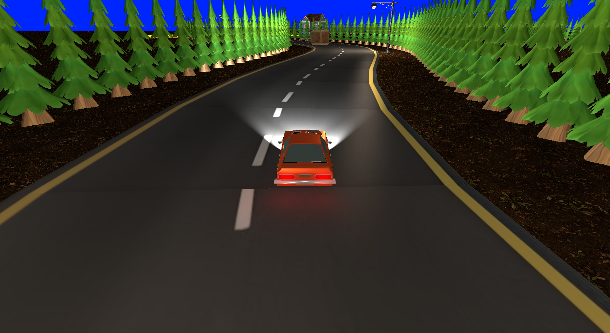
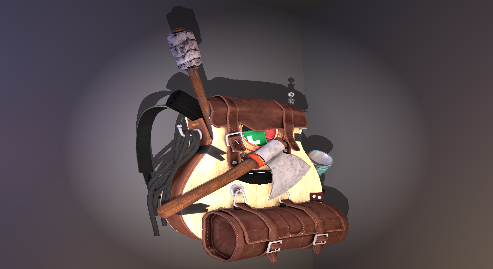
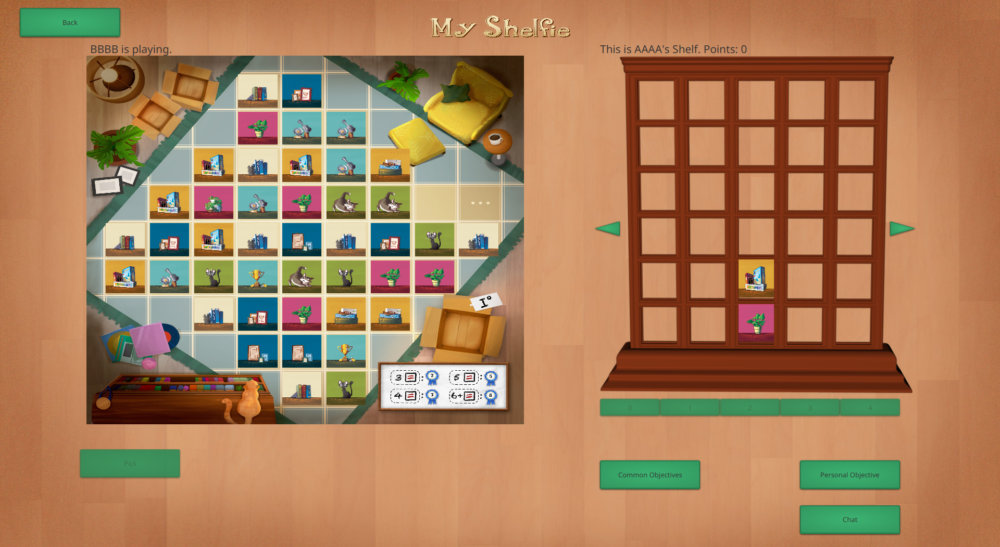

I'm passionate about Graphics Programming and Game Development. I like building applications from the ground up and learning new things every day.
Currently studying at Polytechnic University of Milan, majoring in Computer Graphics with a minor in AI and Operational Research.

Custom Vulkan engine with path tracing capabilities. It simulates a toroidal sensor to perform geometric and photometric acquisition and generates a synthetic dataset for a Gaussian Splatting model.
Keywords: Vulkan, Path Tracing, Gaussian Splatting, C++

2D platformer game developed in Unity. Creates a novel gameplay by mixing Point-and-Shoot mechanics with classic platforming.
Keywords: Unity2D, C#

My very first Vulkan Engine. Created to explore the rendering pipeline and fundamental concepts of rasterization.
Keywords: Vulkan, C++, Rasterization

Deep dive into OpenGL-SC, analyzing its strengths for safety critical applications. Created test environments to profile and compare OpenGL-Desktop performances against its SC counterpart.
Keywords: OpenGL, OpenGL-SC, C++, Python

Digital version of a board game by Cranio Creations. It supports both a CLI and a GUI version. It implements a client-server paradigm to allow hosting multiple games concurrently.
Keywords: Java, JavaFX, Maven